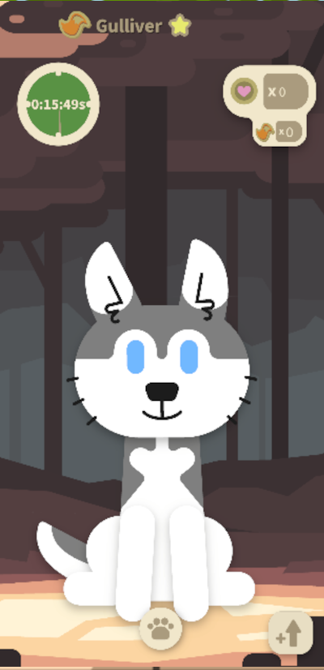
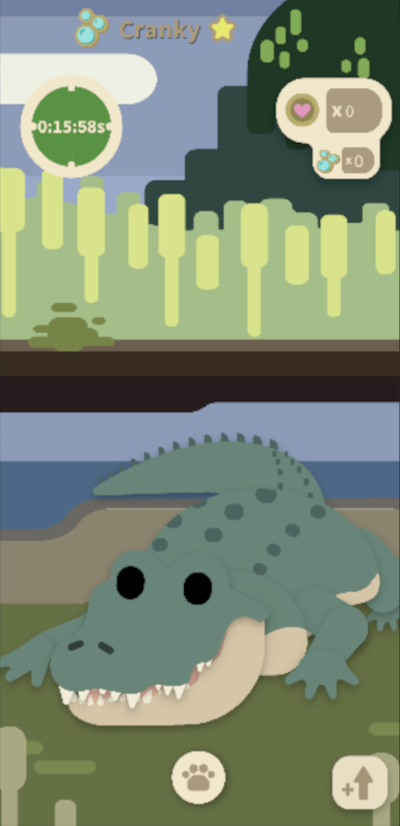
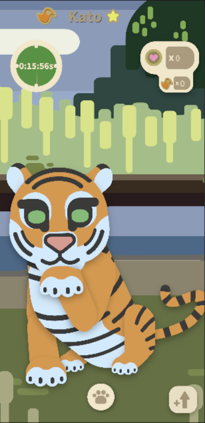
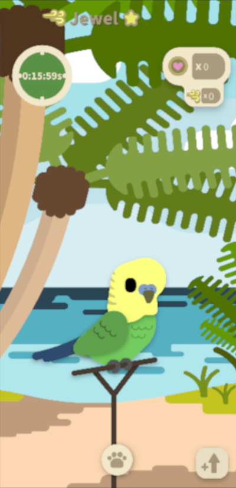
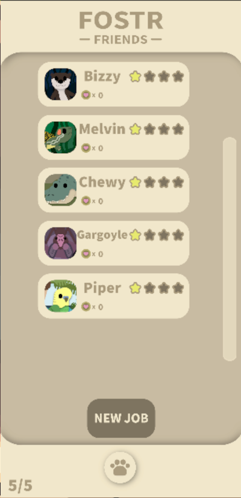
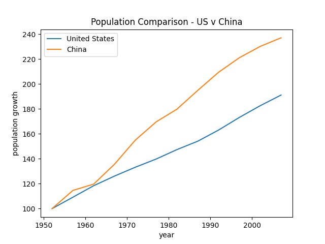

Fostr
    Position: Gameplay Programmer
C# | Unity | Miro
Fostr is a mobile game developed by the a team of students from the University of Massachusetts, Dartmouth.
Under MassDiGI, this team worked throughout the summer to produce a marketable product ready for full release.
Fostr released in November, 2020.
I joined the team to help publish Fostr and provide continued support via updates.
Personal Projects
Position: Lead Programmer
Java | HTML | Python
The personal projects I have tackled throughout my years include small video games, school projects,
this website, and small, one-off applications written in java. Some of these are uploaded to my GitHub.
Palindrome Checker
Python Data Visual
Twitter Bot